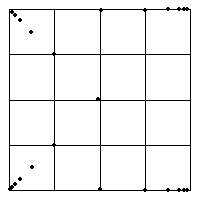

1. (b) Here is the Driven IFS.
|  |
| The first six data points lie in bin 1, the next six in bin 2, the next six in bin 3, and the last six in bin 4. |
| So the first six driven IFS points
go from |
| The next six nearly along the
bottom of the square toward |
| The next six toward |
| The last six
nearly along the top of the square toward |
Return to Exercises.